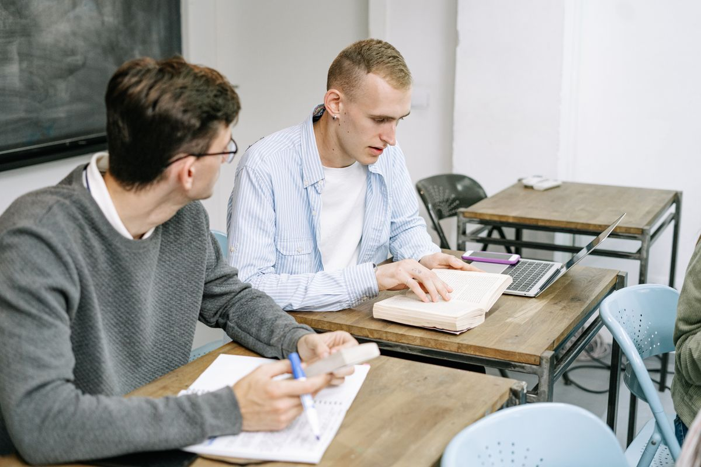

ROOTED IN HOPE. BUILT FOR POSSIBILITY.
Education opens doors.
Let’s find yours.
Afghan Future Hope connects Afghan learners with education resources and a practical way to keep moving toward their goals.

OUR PURPOSE
A clearer place
to begin.
Finding a useful opportunity is only the first step. Knowing what to do next matters just as much. This project brings discovery, planning and reflection into one calm, accessible space.
Created by Aman Islami, IT-2510, as a Web Technologies 1 project. The final release continues the Afghan Future Hope topic and resources from the Midterm and Endterm.
We do not represent the listed providers, guarantee admission, or accept applications.
A SIMPLE PROMISE
Your progress belongs to you.
Saved on this browser
Your nickname, plan, saved opportunities, checklist and study sessions use localStorage. Nothing is submitted to us or to a provider.
No account required
This front-end educational demo does not request passwords or sensitive documents. Anyone using the same browser profile can see its stored data.
Easy to take or delete
Export a JSON backup, restore it elsewhere, or delete your data from Dashboard. Private browsing, blocked storage or clearing browser data may remove your progress.
BUILT WITH TRANSPARENCY
Credits & sources
No downloaded website template was used. External resources and AI assistance are credited below.
| Resource | How it is used | Credit / license |
|---|---|---|
| Original project | Topic, learning-resource directory, photographs and bundled assets retained from the provided Endterm. | Aman Islami, IT-2510 |
| OpenAI ChatGPT / Codex | AI-assisted final redesign, JavaScript implementation, data persistence, validation, accessibility work, tests and report drafting. Student review and understanding are required. | OpenAI ↗ |
| Bootstrap 5.3.8 | Responsive grid, navigation collapse, form and table foundations. Custom visual styling. | Bootstrap · MIT ↗ |
| jQuery 3.7.1 | Sliding FAQ answers, fading status messages, animated scrolling and filtered results. | jQuery · MIT ↗ |
| Inter | Locally bundled interface typeface; Georgia is a system serif fallback for display headings. | Rasmus Andersson · SIL OFL ↗ |
| Pexels photographs | Illustrative learning photographs retained from the Endterm; no endorsement implied. | 8197503, 7742816, 5676748, 10638082, 8199167 · Pexels license |
Official opportunity sources
Summaries are adapted from these official resources. Their own pages govern eligibility, costs and dates. Preparation hours and four-week plans are estimates created for this project.
The official source pages were reviewed on 17 November 2026. Listings do not imply that scholarship applications are currently open.